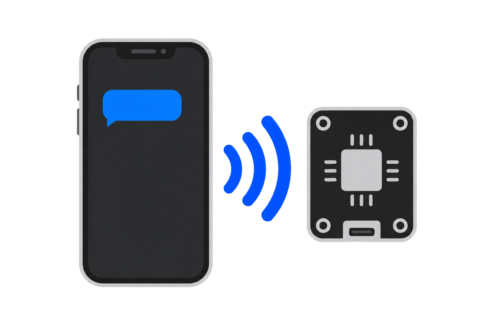

原创界面设计预览，非 iOS 实机截图。仅展示视觉与交互，不连接设备、不上传内容。示例内容均为虚构。
先聊聊目标，再决定下一步。你允许后，才开始操作。
01 / 聊天 · 一个输入框，一个发送入口
通用
广播截图会交给你选择的 AI 服务。进入敏感页面前，先结束系统广播。
02 / 设置 · 清楚的分组与留白

设备已连接，可发送任务。回到聊天，先看看 AI 的计划。
连接检查不会开始控制。屏幕上传与设备操作仍需你明确允许。
03 / 原生结果 sheet · 图形、结果、下一步